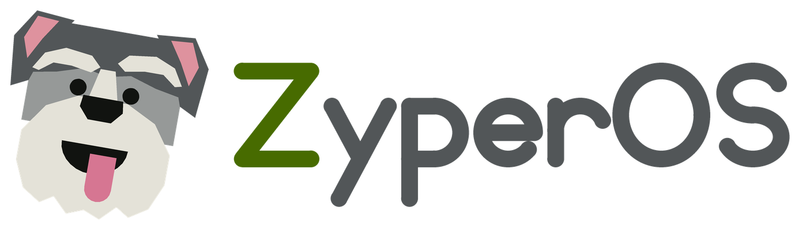
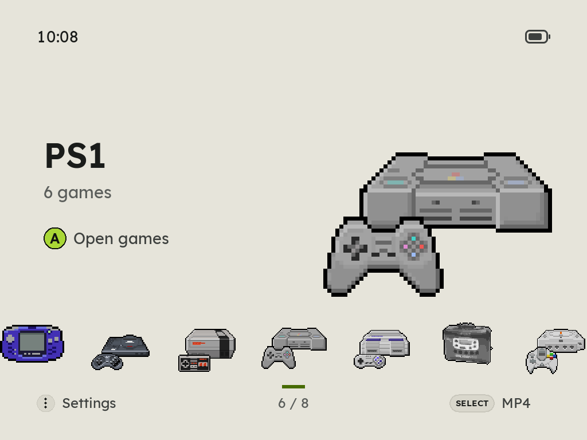

Fast custom firmware for the GKD Pixel 2
Forty systems, PortMaster ports, box art and RetroAchievements, from a card you can take out.
zyperos.com
Forty systems, PortMaster ports, box art and RetroAchievements, from a card you can take out.
zyperos.com